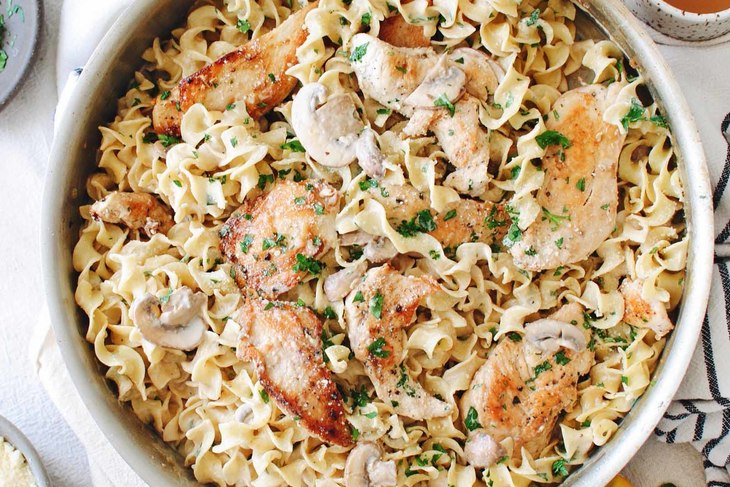
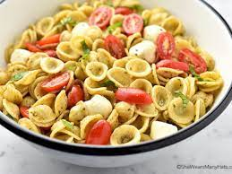

Dishes for which Bihar is famous include Bihari kebabs, litti chokha, Bihari boti, Bihari chicken masala, sattu paratha (parathas stuffed with roasted gram flour), chokha (spicy mashed eggplant and potatoes), fish curry and posta-dana ka halwa.
Dahipuri, or dahi puri, is a snack, originating from India, The dish is a form of chaat and originates from the city of Mumbai. It is served with mini-puri shells, which are more popularly recognized from the dish pani puri
Baingan bharta is a spiced and mashed aubergine or eggplant dish popular in the Indian cuisine
Fabulous one of the fine dining restaurants . It’s the place to go for North Indian food, as well as anything with a touch of North West Frontier Province flavors.
The ambiance is somewhat classical with solid furniture and exposed red brick walls. Specialities include meat heavy Mughali, Afghan, and tandoori dishes.
Our passionate culinary team is made up of innovative and experienced professionals with years of experience in foodservice. Their work combines food science, technology and the culinary arts to imagine the future of food.
They draw on current trends and culinary insights from across our global network to create customized solutions for all of our clients. Using proprietary flavor research, our team of forward-thinking chefs aims to guide the next phase of foodservice. Individually, they've earned accolades across the industry, but together they're crafting the future of flavor!
Please call
+918998763320
Patna(Bihar)india
boring road 80001
Mon-Thus: 10:00 AM - 11:00 PM
Fri-Sun: 11:00 AM - 02:00 AM